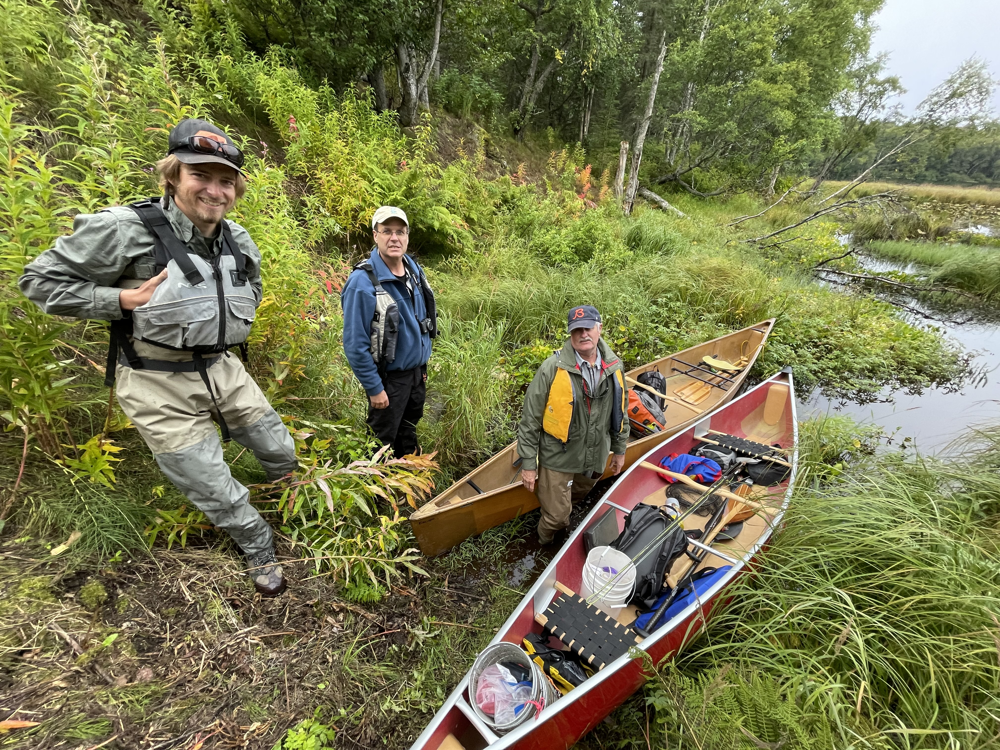

2 Methods
2.1 Site selection
Fish habitat survey sites were identified using databases generated by Kenai Peninsula Trout Unlimited and Kenai Watershed Forum. Sites were further prioritized using the following criteria:
Significant increase in protection of anadromous fish habitat through addition of new stream miles/lake acreage
Ability to provide significant revision and/or data corroboration for outdated catalog data
Ease of accessibility via foot travel based on travel time and ability to obtain private property access
Proportion of stream or lake adjacent to developed parcels
Habitat with medium-high risk assessment rating using the Kenai Peninsula Fish Habitat Partnership’s “Freshwater Potential Threats Ranking Table“1
Alignment with fieldwork priorities of local resource managers as well as partnership efforts including those of Kenai Mountains to Sea (a prioritized corridor list can be found at https://kenaiwatershed.org/science-inaction/mountains-to-sea/) and Kenai Peninsula Fish Habitat Partnership (KPFHP)
2.1.1 Online Study map
The project study map may be accessed by following the link at ArcGIS Online2 or in the interactive figure below. Toggle layers on/off as needed.
Prior to minnow trap deployment, each year we obtained all necessary permits from ADF&G including the Aquatic Resource Permit (ARP). As required by the ARP, the ADF&G local Area Management Biologist was notified of trapping locations and timeframes before going into the field. We also obtained landowner permission for access to sites where applicable. Finally, trapping efforts for each day were strategically chosen based on proximity of sites so as to reduce drive and personnel time.
2.2 Fish capture and processing

2.2.1 Minnow Trapping
We used Gee minnow traps baited with salmon eggs as the primary capture methods for juvenile salmonids. We used commercial salmon eggs as bait and placed them in perforated 2-4 oz containers in order to prevent egg consumption by fish. We labeled traps with KWF contact information using brightly colored flagging tape. At the trapping location, we collected site photos and recorded the following on a datasheet: field technician initials, GPS coordinates of trap deployment site(s), and site drawings with pertinent notes regarding fish habitat. We used a minimum of one baited minnow trap, fully submerged in a discrete location, and properly secured to ensure retrieval. We recorded the date and time of deployment. While not exceeding 24 hours, we allowed traps to soak overnight if needed. Upon trap retrieval, we recorded the date and time and transferred the trap’s catch into a bucket of water.
2.2.2 Fish processing
We identified each fish that we captured to lowest feasible taxa and life stage using a photarium. We recorded disposition; and in somecases recorded fork length to the nearest millimeter along with photos of identifying features. When completed, we placed fish in a recovery bucket. Once all fish recuperated successfully, we released them near the original capture location. We monitored data throughout the summer for unintended mortalities, and were prepared to cease sampling and contact the area management biologist should >10% unintended collection mortality occur. We entered all data into the Aquatic Resource Permit spreadsheet provided by the ADF&G and submitted it with a written report to ADF&G at the conclusion of each permit year.
These data were used to submit nominations for the inclusion of new miles or acres of fish habitat to the AWC as well as revision or corroboration of fish presence.
2.3 Habitat connectivity
In some cases where maps indicated a likelihood of anadromous habitat yet we did not capture salmonids, we visited additional sites within the drainage where potential barriers to fish passage may exist such as road crossings or modified lake outlets. We photographed and recorded coordinates at these locations if potential fish barriers were apparent and submitted them to ADF&G for potential inclusion in their Fish Passage database.
2.4 Data management and analysis
2.4.1 Data management
We recorded data in the field using pre-printed Rite-in-the-Rain field forms, and entered data into a Google Sheets database3. We read data into RStudio and generated this report using the Quarto book template. Project edits are managed through a dedicated project GitHub repository4.
All project documents and data can be accessed in a dedicated Google Drive folder5.
2.4.2 Analysis
We generated summary tables displaying the quantity of fish captured at each sample site by date. We also generated a csv file reformatting all fish capture data to prepare for submission to the Alaska Department of Fish and Game to fulfill Aquatic Resource Permit requirements.